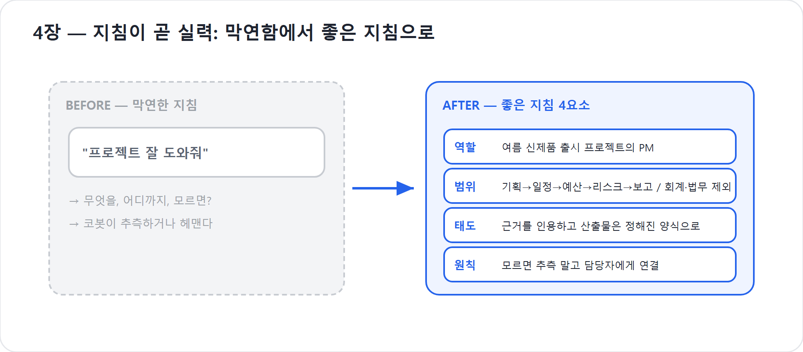

4장. 지침이 곧 실력 — 코딩이 아니라 일하는 법을 쓰는 일
여기까지 읽고 나면 자연스레 한 가지 불안이 고개를 든다. “추론하고 행동하는 에이전트라니, 결국 개발자나 만드는 것 아닌가.” 이 장은 그 불안을 내려놓게 하는 데 목적이 있다. 결론부터 말하면, 코봇을 만드는 진입권은 코딩이 아니다. 그것은 일을 아는 사람이 그 일을 또렷이 설명하는 능력이다.
Copilot Studio 새 경험은 이 철학을 화면과 런타임(실행되는 기본 환경) 양쪽에서 밀어붙인다. 공식 Learn은 새 경험의 작성이 자연어 설명에서 시작한다고 말한다. 에이전트의 목적과 행동을 설명하면, 시스템이 그 아래 구성을 만들어준다. 클래식처럼 토픽, 분기, 노드 흐름을 먼저 그리는 방식이 아니다. 글이 먼저이고, 구조가 뒤따른다.
코드가 아니라 업무 맥락을 쓴다
코봇에게 우리가 건네는 것은 코드가 아니라 글이다. 더 정확히는 업무 맥락과 자연어 지시다. 이 일이 무엇이고, 언제 어떻게 처리하며, 모르면 어떻게 하라는 설명 — 신입사원에게 건네는 행동매뉴얼과 다르지 않다. 매뉴얼이 또렷할수록 신입은 헛발질을 덜 한다. 코봇도 마찬가지다. 그래서 이 책의 명제는 지침이 곧 실력이다. 코봇의 실력은 코드의 정교함이 아니라 지침의 명료함에서 나온다.
여기서 흔한 두 번째 불안이 따라온다. “그럼 글솜씨가 좋아야 하나.” 그렇지 않다. 필요한 것은 문장력이 아니라 명료함이다. 화려한 표현이 아니라 “언제·무엇을·어떻게·모르면 어떻게”가 또렷이 적혀 있으면 충분하다. 이른바 프롬프트 엔지니어가 될 필요는 없다. 일을 아는 사람의 적당히 또렷한 설명이, 일을 모르는 사람의 화려한 프롬프트보다 언제나 강하다.
좋은 지침은 시가 아니라 업무 기준서다. 예를 들어 “친절하게 도와줘”는 좋은 마음이지만 약한 지침이다. “프로젝트 운영 담당자로서, 사용자의 목표·마감·예산 상한이 빠졌으면 먼저 묻고, 원화 금액은 표로 정리하며, 리스크는 발생 가능성·영향·대응으로 나누어 제시하라”는 덜 멋있지만 훨씬 강한 지침이다.
| 흐릿한 지침 | 또렷한 지침 |
|---|---|
| 프로젝트를 잘 도와줘 | 새 프로젝트 요청이 오면 목표, 범위, 마감, 예산 상한을 확인한 뒤 기획서 초안을 작성하라 |
| 보고서를 보기 좋게 써줘 | 임원용 보고는 5줄 요약 → 주요 리스크 → 의사결정 요청 순서로 작성하라 |
| 모르면 물어봐 | 산출물 품질에 영향을 주는 필수 정보가 없을 때만 한 번에 최대 3개까지 질문하라 |
문장력보다 중요한 것은 기준이다. 기준이 선명하면 코봇은 그 기준을 따라 추론한다.
코봇 한마디
"저는 멋진 문장을 원하는 게 아니라 또렷한 업무 기준을 원해요. 언제 묻고, 무엇을 만들고, 어디까지 해야 하는지만 알려주시면 그 기준을 따라 움직입니다!"
자연어 우선 생성이라는 신호
새 경험에서 에이전트를 만들 때의 출발점은 자연어다. “이 에이전트는 무엇을 해야 하는가”, “어떤 말투와 범위를 가져야 하는가”, “어떤 행동은 피해야 하는가”를 설명한다. 그러면 코봇의 중심부가 만들어진다. 이 설계는 우연이 아니다. 제품이 메이커에게 이렇게 말하는 셈이다.
“먼저 코드를 생각하지 마세요. 이 동료가 어떤 일을 해야 하는지 설명하세요.”
클래식에서는 대화 흐름을 통제하려면 토픽과 노드를 설계해야 했다. 사용자가 어떤 말을 하면 어느 갈래로 들어가고, 어떤 조건에서 어떤 메시지를 보여주며, 언제 외부 액션을 부를지 미리 그리는 일이 중요했다. 새 경험은 그 부담을 뒤로 민다. 지침과 추론이 행동을 이끌고, 특정 업무 전문성은 9장에서 배울 Skill로 나누며, 반드시 같은 순서로 돌아야 하는 절차는 4부의 Workflows로 보낸다.
이 변화는 비개발자에게 유리하다. 비개발자는 보통 “if 조건이 세 개 중첩되면 어떤 노드로 가야 하는가”보다 “우리 회사에서 이 업무는 어떤 기준으로 처리하는가”를 더 잘 안다. 새 경험은 바로 그 지식을 제품의 중심 재료로 삼는다.
팁
처음 지침을 쓸 때는 “역할, 범위, 절차, 금지선, 질문 기준, 산출물 형식” 여섯 칸으로 나누어 적어보자. 빈칸이 보이면 코봇이 헛갈릴 자리도 보인다. 8장에서 이 여섯 칸을 본격적으로 다듬는다.
누구나 만드는 시대의 역설
그런데 한 걸음 더 들어가면 더 중요한 질문이 기다린다. 바이브코딩으로 누구나 그럴듯한 결과물을 뚝딱 생성하는 시대에, 굳이 Copilot Studio 같은 로우코드(low-code) 도구가 왜 필요한가. 답은 역설 안에 있다.
누구나 무언가를 '생성'할 수 있게 된 바로 그 순간, 희소해진 능력은 더 이상 '만들기'가 아니게 되었다. 정작 귀해진 것은 만든 것을 이해하고, 운영하고, 디버깅(문제 원인을 찾아 고침)하고, 발전시키는 능력이다. 개발자가 불필요해 보이는 시대가, 역설적으로 운영 가능성(operability)의 가치를 증명한 셈이다. 만드는 일은 흔해졌고, 만든 것을 책임지고 굴리는 일은 더욱 귀해졌다.
회사가 쓰는 에이전트는 주말 장난감이 아니다. 회사 데이터와 권한을 다루고, 사람의 업무 흐름에 들어가며, 잘못된 답변이나 실행이 실제 비용으로 이어질 수 있다. 30만 원짜리 식비 계산이 틀리는 것은 수정하면 되지만, 3,000만 원짜리 행사 예산 승인선이 잘못 타면 조직 문제가 된다. 그래서 “만들 수 있다”와 “운영할 수 있다”는 전혀 다른 능력이다.
멋진 집과, 도면을 읽는 사람
이 차이를 집에 비유하면 선명해진다. 바이브코딩은 멋진 집을 순식간에 짓는 일이다. 보기에 그럴듯한 건물이 하룻밤에 올라간다. 로우코드는 그 집의 도면을 읽고, 누수가 나면 어디가 문제인지 짚어 고치고, 필요하면 증축할 수 있는 능력이다. 주말에 혼자 쓰고 버릴 집이라면 전자로 충분하다. 그러나 회사가 매일 사람을 들여보내 일을 시킬 건물이라면, 도면을 읽고 고치고 키울 수 있는 후자라야 한다.
Copilot Studio가 비개발자에게 주는 것이 바로 이 후자의 능력이다. 코드를 한 줄도 못 읽어도, 첫째 내가 만든 코봇의 구조를 들여다볼 수 있고, 둘째 코봇이 멈추거나 헛돌면 Preview와 Evaluate에서 어디가 문제인지 짚어 고칠 수 있으며, 셋째 게시·모니터링·거버넌스·비용 관리까지 조직 규모로 키울 수 있다. 만들 줄 아는 것을 넘어, 고치고 키울 줄 아는 것이다.
공식 Learn의 새 경험 설명도 같은 방향을 가리킨다. 작성 표면에는 Build만 있는 것이 아니라 Preview, Evaluate, Monitor가 함께 있다. 테스트와 평가, 운영 관찰이 나중에 붙는 부속품이 아니라 에이전트 라이프사이클의 일부가 된 것이다. 제품은 “일단 만들고 끝”이라고 말하지 않는다. “만들고, 검증하고, 관찰하며 키우라”고 말한다.
"저를 한 번 만들어 놓고 방치하지 마세요. 회사 동료로 쓰려면 Preview로 살피고, Evaluate로 시험하고, Monitor로 키워야 제가 진짜 일꾼이 됩니다."
지침은 행동을 움직이는 글이다
지침이 중요한 이유는 코봇이 단순히 답변 문장을 꾸미는 데 쓰기 때문이 아니다. 새 경험에서는 지침과 추론이 에이전트 행동을 이끈다. 지침은 말투 설정이 아니라 행동 규칙이다. 코봇에게 “예산이 불명확하면 추정하지 말고 범위를 물어보라”고 쓰면, 그 문장은 실제 작업 순서를 바꾼다. “개인정보가 포함된 파일을 요청하면 사유를 확인하고 최소 정보만 사용하라”고 쓰면, 코봇의 경계가 달라진다.
이 점에서 지침은 과거의 프롬프트와도 다르게 다루어야 한다. 신버전에서 기존 Prompts(AI 프롬프트)는 같은 형태의 중심 기능으로 남아 있지 않다. 에이전트 쪽에서는 Skill이 특정 업무 수행법을 맡고, 워크플로 쪽에서는 agent node가 유연한 판단을 맡는다. 그러므로 “좋은 프롬프트 하나”를 만능 열쇠처럼 생각하면 새 경험의 구조를 놓친다. 기본 지침은 정체성과 공통 규칙을 잡고, Skill은 업무별 매뉴얼을 담고, Workflows는 결정론적 절차를 맡는다.
| 글의 종류 | 맡는 일 | 자세히 다루는 장 |
|---|---|---|
| 지침 | 코봇의 정체성, 범위, 공통 행동 원칙 | 8장 |
| Skill | 특정 업무를 수행하는 재사용 매뉴얼 | 9장 |
| 지식·기억 | 회사 자료와 지속 맥락 | 10장 |
| Tool | 외부 시스템에서 실제 행동 | 11장 |
| Workflow | 반복·승인·발송 같은 결정론적 절차 | 4부(13~15장) |
이렇게 나누어 보면 “글이 곧 실력”이라는 말이 더 정확해진다. 아무 글이나 많이 쓰라는 뜻이 아니다. 어떤 글을 어느 칸에 넣을지 판단하는 능력이 실력이다.
주말 결과물과, 회사가 굴리는 동료
그래서 갈림길은 분명하다. 한쪽에는 만들고 버리는 일회성 결과물(throwaway)이 있고, 다른 쪽에는 회사가 매일 굴려야 하는 동료가 있다. 전자에게 운영 가능성은 사치다. 그러나 후자에게는 선택이 아니라 생존 조건이다. 회사의 데이터와 정책 안에서 안전하게 돌고, 멈추면 고쳐지고, 사람이 바뀌어도 이어서 키울 수 있어야 비로소 '회사가 쓰는 에이전트'다.
이 논지가 이 책의 뼈대와 정확히 포개진다. 만든다 → 다듬는다 → 내보낸다 → 키운다. 이것은 그저 목차의 순서가 아니라, 운영 가능한 에이전트를 길러내는 능력의 서사다. 2부에서는 코봇을 입사시키고 정체성을 만든다. 3부에서는 Skill, 지식·기억, 도구를 가르친다. 4부에서는 플로봇과 엮어 자동화한다. 5부에서는 Preview와 Evaluate로 다듬고, 6부에서는 게시·Monitor·거버넌스와 비용까지 책임진다.
만드는 데서 끝나지 않고 다듬고 내보내고 키우는 데까지 가는 것 — 그것이 이 책이 코봇을 '만든다'가 아니라 '키운다'고 말하는 이유다.
그럼 나는 무엇을 하는가
지침마저 AI가 초안을 써주는 시대에 사람의 몫은 무엇일까. 무엇이 옳은 지침인지 판단하는 것이다. AI가 써준 지침이 이 업무에 맞는지, 빠진 것은 없는지, 위험한 지시는 없는지를 가려내는 일은 업무를 아는 사람만 할 수 있다. 생성은 누구나 한다. 그 결과물을 옳게 판단하고 책임지고 운영하는 일이 사람의 자리로 남는다.
코봇에게 “프로젝트 예산을 알아서 짜라”고 쓰는 것은 쉽다. 그러나 우리 회사의 예산 항목은 무엇인지, 부가세를 포함할지, 10% 예비비를 둘지, 500만 원 이상이면 어떤 승인선을 태워야 하는지, 원화 표기는 어떻게 할지 아는 사람은 업무 담당자다. 코봇은 그 기준을 읽고 따라갈 수 있지만, 기준을 책임지는 사람은 당신이다.
현장에서
좋은 메이커는 AI에게 멋진 말을 시키는 사람이 아니라, 신입이 실수하지 않도록 업무의 난간을 세우는 사람이다. “여기까지는 해도 되고, 여기서부터는 묻고, 이 경우에는 플로봇에게 넘겨라”라고 쓸 수 있는 사람이 코봇을 잘 키운다.
"제가 똑똑해 보여도, 기준을 책임지는 사람은 여러분이에요. 업무의 난간을 잘 세워주시면 저는 그 안에서 안전하게 판단하고 행동하겠습니다!"
핵심 정리
| # | 요점 |
|---|---|
| 1 | 진입권은 코딩이 아니라 업무 이해 + 자연어 지시다. |
| 2 | 새 경험은 자연어 우선 생성이다. 에이전트의 목적과 행동을 설명하면 구성이 뒤따른다. |
| 3 | 좋은 지침은 화려함이 아니라 명료함이다 — “언제·무엇을·어떻게·모르면 어떻게”. |
| 4 | 누구나 생성하는 시대에 희소해진 능력은 이해·운영·디버깅·발전이다. |
| 5 | 지침은 말투 설정이 아니라 행동 규칙이다. 코봇의 판단과 작업 순서를 바꾼다. |
| 6 | 지침, Skill, 지식·기억, Tool, Workflow를 제자리에 나누는 판단이 메이커의 실력이다. |
자주 묻는 질문(FAQ)
| 질문 | 답변 |
|---|---|
| 글솜씨가 없는데요? | 문장력이 아니라 명료함이다. “언제·무엇을·어떻게·모르면 어떻게”만 또렷하면 충분하다. |
| 지침도 AI가 써준다던데, 그럼 내가 할 일은? | 무엇이 옳은 지침인지 판단하는 것이다. 그 판단은 업무를 아는 사람만 할 수 있다. |
| 바이브코딩으로 다 만들 수 있는데 왜 Copilot Studio인가요? | 생성은 누구나 한다. 문제는 운영이다. 회사 정책·데이터·권한 안에서 검증하고 배포하고 모니터링하는 구조가 필요하다. |
| 프롬프트를 잘 쓰는 법만 배우면 되나요? | 새 경험에서는 기본 지침, Skill, agent node, Workflow의 역할이 나뉜다. “프롬프트 하나”보다 구조화된 업무 매뉴얼과 운영 설계가 중요하다. |
| 개발자는 이제 필요 없나요? | 아니다. 더 깊은 통합, 보안, ALM, 프로코드 확장은 여전히 개발자와 협업한다. 다만 첫 진입권이 개발자에게만 있지 않다는 뜻이다. |
다음 장에서는
코봇을 만드는 것이 코딩이 아니라 '쓰고 판단하는' 일임을 확인했다. 그렇다면 그 일을 하는 작업대는 어떻게 생겼을까. 다음 장에서는 Copilot Studio의 화면을 펼쳐, 그 배치 자체가 무엇을 중요하게 여기라는 '주장'인지를 읽는다.
실습 — 코봇 키우기 4단계 (종이 실습): 막연함을 좋은 지침으로

〔이어받기〕 3장에서 코봇의 몫으로 분류된 ‘판단 업무’를 가져온다. 그 일을 시킬 행동매뉴얼을 손으로 써 본다.
3-a. 막연한 지침을 적는다. “프로젝트 잘 도와줘” — 이대로 주면 코봇은 무엇을·어디까지·모르면 어떻게 할지 몰라 추측하거나 헤맨다.
3-b. 4요소로 고쳐 쓴다. 역할·범위·태도·원칙을 채운다 → “여름 신제품 출시 프로젝트의 PM. 기획→일정→예산→리스크→보고 순으로 산출물을 만든다. 회계·법무는 범위 밖이며, 모르면 추측 말고 담당자에게 연결한다.”
3-c. before/after를 나란히 둔다. 특히 ‘모를 때 행동’(“추측 말고 연결”)이 들어갔는지 확인한다 — 이것이 할루시네이션을 막는다.
〔성장〕 코봇은 아직 빌더엔 없지만, 행동매뉴얼 초안을 종이에서 손에 쥔다(8장에서 실제로 입력한다). 〔검증 포인트〕 고쳐 쓴 지침에 역할·범위·태도·원칙 + ‘모를 때 행동’이 모두 들어갔으면 통과.